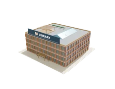
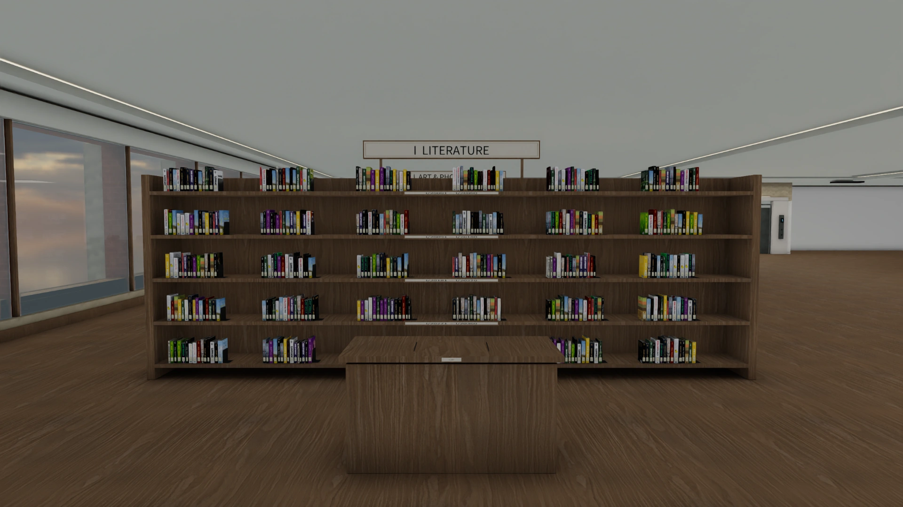
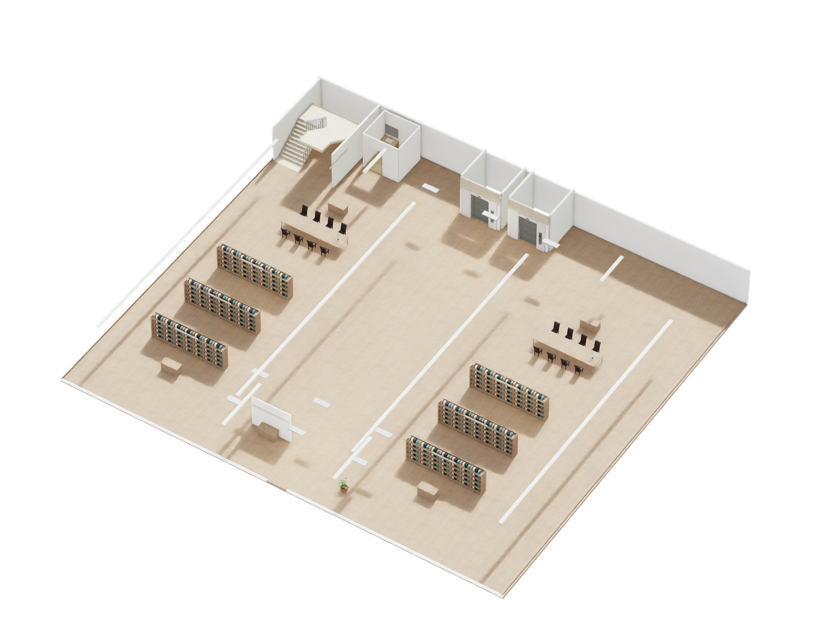

到达指定阅览层
从一楼乘电梯到指定阅览楼层，完整驶出并核对层号。
通用任务 · 双本体验证待完成ENVIRONMENT 05 / 9
05READ / LEARN / DISCOVER


Interior
INSIDE THE ENVIRONMENT
Select a level to explore its interior.

CAPABILITIES & EMBODIMENTS
通用任务面向 FWMiniPiper 与 G1；专用任务测试指定本体的特有能力。当前均为待验证设计，不表示已完成物理执行。
一楼 Service Handover、Returns Sorting、Children Reading；二至四楼 Collection 与 Study Desk。上层按已有馆藏标签识别，不臆造各层独占学科。
从一楼乘电梯到指定阅览楼层，完整驶出并核对层号。
通用任务 · 双本体验证待完成从一楼依次乘梯到二楼和四楼公共停靠区，再返回一楼；按指定次序完成三段跨层并记录每次完整驶出。
通用任务 · 双本体验证待完成在一楼 Service Handover 台新增铰链柜上抓持把手拉开门，再关门；不取书，不要求机器人进入柜内。
通用任务 · 双本体验证待完成已补建铰链柜门；源关节、刚体与碰撞存在，双夹爪完整轨迹及裁判仍待验收。
尚未启用正式评测；需完成初态配置、成功判据及指定本体的完整物理轨迹验证。
滑开一楼 Service Handover 台的馆藏柜门至可取书开口，再恢复关闭；不抓书，不要求身体进入。
通用任务 · 双本体验证待完成已安装独立滑门柜；与 D01 铰链柜门分别绑定、分别验证。
尚未启用正式评测；需完成初态配置、成功判据及指定本体的完整物理轨迹验证。
按开放或闭馆请求设置指定公共照明回路，其他回路不变。
通用任务 · 双本体验证待完成在本场景指定可达空调面板上观察初态，将开关、模式和设定值改为任务要求；至少一项需改变，其他设备不变。评分使用面板与控制器实际状态，不要求室温达到设定温度。
通用任务 · 双本体验证待完成需验证两种夹爪不误触相邻按键，并接入模式、开关和设定值裁判；不把按钮几何存在当作可按或热效果证据。
尚未启用正式评测；需完成初态配置、成功判据及指定本体的完整物理轨迹验证。
从二楼 Collection 1 的独立动态任务书中识别目标，送到四楼 Study Desk 1；保留两侧夹指空间。
通用任务 · 双本体验证待完成需按本任务配置动态物品、身份或数量标签、交接与暂放区域及指令专属历史判据；源站点存在不代表新任务初态已实现。
尚未启用正式评测；需完成初态配置、成功判据及指定本体的完整物理轨迹验证。
从一楼 Service Handover 逐本取三本任务书，按可见分类放入一楼 Returns Sorting 的绑定区域，模糊标签单独复核。
通用任务 · 双本体验证待完成需按本任务配置动态物品、身份或数量标签、交接与暂放区域及指令专属历史判据；源站点存在不代表新任务初态已实现。
尚未启用正式评测；需完成初态配置、成功判据及指定本体的完整物理轨迹验证。
从二楼和四楼 Study Desk 逐本回收任务书送到一楼 Returns Sorting，再关闭清单指定的阅览区灯。
通用任务 · 双本体验证待完成需按本任务配置动态物品、身份或数量标签、交接与暂放区域及指令专属历史判据；源站点存在不代表新任务初态已实现。
尚未启用正式评测；需完成初态配置、成功判据及指定本体的完整物理轨迹验证。
从一楼归还区选择带儿童分类标签的任务书，送到同层 Children Reading 的低位台，不抽取密排装饰书。
通用任务 · 双本体验证待完成需按本任务配置动态物品、身份或数量标签、交接与暂放区域及指令专属历史判据；源站点存在不代表新任务初态已实现。
尚未启用正式评测；需完成初态配置、成功判据及指定本体的完整物理轨迹验证。
在二楼 Collection 1 阅读迁移提示，转到三楼 Collection 2 找到目标任务书，再送到四楼 Study Desk 2；迁移提示和物品初态须一致。
通用任务 · 双本体验证待完成需按本任务配置动态物品、身份或数量标签、交接与暂放区域及指令专属历史判据；源站点存在不代表新任务初态已实现。
尚未启用正式评测；需完成初态配置、成功判据及指定本体的完整物理轨迹验证。
从一楼新增铰链柜取指定动态任务书，暂放并关柜门，送到二楼 Study Desk，再开启绑定阅览区灯。
通用任务 · 双本体验证待完成需按本任务配置动态物品、身份或数量标签、交接与暂放区域及指令专属历史判据；源站点存在不代表新任务初态已实现。
尚未启用正式评测；需完成初态配置、成功判据及指定本体的完整物理轨迹验证。
本场景暂无专用任务。两种本体均可使用上方通用任务候选。